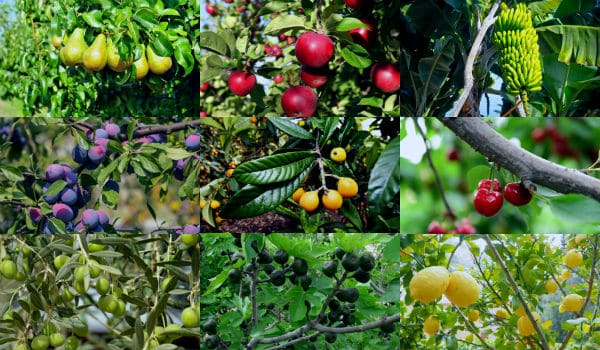

Plantas Frutales
Las plantas y árboles frutales son muy valorados por su doble propósito: aportar belleza estética y paisajística a los espacios, y producir alimentos frescos y nutritivos ricos en vitaminas. La opinión generalizada destaca que tenerlos en el hogar es una excelente inversión para mejorar la calidad de vida.